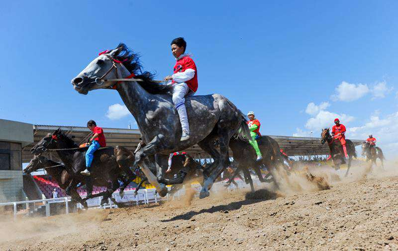

Казахские национальные игры были важной частью жизни степняков. Они не только развивали выносливость, логику, тренировали волю, выполняли функцию своеобразных тренажеров, но и служили средством коммуникации, передачи информации, содержали нужный воспитательный компонент.
В седле
Лошадь была верной спутницей казахов. Более того, среди всех домашних животных она занимала первое место. Согласно древней мифологии, покровителем лошадей является Камбар-ата.
Конь служил основным транспортным средством, кобылицы были источником продовольствия – кумыса, мяса, а скакуны – гордостью джигита и показателем его достатка. Табунами также измеряли богатство.
Как известно, национальные игры бывают как для детей, так и для взрослых. И для взрослого населения игры в большинстве своем связаны с лошадьми: көкпар, аударыспақ, жамбы ату, байға, қыз қуу, күме алу, тымақ ұру. Все они являются весьма зрелищными.
Көкпар
Это одна из самых популярных игр, дошедшая до наших дней. Чтобы участвовать в ней, нужно не просто быть хорошим всадником, уверенно держаться в седле, но и обладать выносливостью. Выбивая друг у друга тушу козла, джигиты демонстрируют силу, умение сохранять равновесие в сложных условиях.
Аударыспақ
Основная цель конноспортивной игры – тренировка будущих воинов. Если коротко, то суть игры заключается в том, чтобы стащить противника с седла. Два джигита соревнуются в силе и умении держаться на коне. Стартуют примерно в метрах 400–500 друг от друга. Успех зависит как от физической подготовки наездника, так и от выносливости коня. Зрители поддерживают азарт соревнующихся выкриками и возгласами. Игра популярна по сей день, особенно в аулах.
Күме алу
Для күме алу нужны ловкость и меткость, а также выносливость. На полном скаку всадник собирает монеты, а в более древние времена – слитки, раскиданные по периметру поля. Останавливаться нельзя! Суть заключается именно в том, чтобы взять монету с земли не сбавляя шаг коня. Эта игра также направлена на тренировку определенных навыков, которые могут пригодиться на поле боя, в битвах.
Тымақ ұру
Умение ориентироваться в пространстве, навыки передвижения в особо сложных условиях – примерно так можно описать игру тымақ ұру. Ее название переводится как «сбивание шапки», то есть тымақа. На шест высотой 1–1,5 метра вешают головной мужской убор. Игроку показывают место, где шест и шапка, потом ему завязывают глаза, крутят вокруг своей оси и отпускают. Он должен с завязанными глазами сбить тымақ кнутом. Эта игра, помимо прочего, развивает интуицию и внутреннее чутье.
Қыз қуу
О сколько же мгновений чудных и надежд дарила эта игра молодым сердцам! Она широко известна в народе, отражена в художественных произведениях, картинах и гравюрах, сцены с қыз қуу эффектно входят в кинофильмы. Самый известный – культовая лента «Девушка и джигит».
Для игры нужна пара молодых людей. Как правило, на старте девушка стоит впереди джигита, на определенном расстоянии. Когда игра начинается, джигит должен догнать девушку. Наградой являются поцелуй и объятия. А если джигит не сумеет догнать девушку, то она скачет за ним и может отхлестать его камчой.
Байға
Байға делится на множество видов в зависимости от возраста коней, участвующих в забеге. Это тай-байға, қунан-байға, донен-байға и ат байға. Как правило, байға проводилась на больших тоях, призы зависели от достатка организатора. Владельцу скаковой лошади, забирающей призовые места, нередко завидовали, а бывало, даже мстили, не прощая удачливость.
Так, у акына и жыршы Акана-серы был скакун быстрее ветра по имени Кулагер. Весть о коне, у которого «были крылья», разнеслась далеко по степи. На всех скачках Кулагер приходил первым, доставляя владельцу радость. Акан-серы любил своего тулпара. Но завистливым глазом смотрели недоброжелатели на победы Кулагера. Подкараулив, они убили верного спутника и гордость Акана-серы.
Акын тяжело перенес утрату друга. Потрясенный подлостью Жусупа и его прихвостней, он написал стихотворение, посвященное верному коню:
Жел соқса қамыс басы майда
деймін,
Атыңды, ат айдаушы қайда
деймін.
Алдыңғы ат баран болмай,
қылаң болды,
Жығылмаса Құлагер
қайда деймін?!
Жамбы ату
По условиям этой интересной игры, существующей у многих тюркских народов, участник должен на скаку сбить приз, который устанавливали на определенной высоте. Мешок с призом подвешивали на веревке из конского волоса или на ремне. Побеждал тот, кто сумел сбить его с наименьшим количеством попыток. Меткость и сила – основные критерии для победы.
В советские годы игра была предана забвению, как и многое, связанное с традициями. С обретением независимости она вновь начала набирать силу, увеличивая число любителей померяться силой и зоркостью. В 2014 году состоялись первые турниры по жамбы ату, позже создана целая федерация, проводились и международные турниры.
Тоғыз құмалақ
Здесь главное – интеллект и логика. Незатейливая на первый взгляд настольная игра на самом деле учит вести счет в уме, мыслить стратегически.
Играют в нее при помощи деревянной доски, в которой есть специальные выемки, каждая из девяти имеет свое название. Игрокам выдается одинаковое количество шариков. Совершая арифметические действия, они должны собрать как можно больше «отбитых» шариков. Основной цифрой в игре выступает «9», которая, как известно, является сакральной для тюрков.
Изначально в тоғыз құмалақ играли пастухи, выкапывая лунки прямо в земле. Позже игра перекочевала в дома и стала настольной. Она популярна по сей день, в стране проводятся турниры по тоғыз құмалақ. При кажущейся простоте игра по интеллектуальному накалу сравнима, например, с шахматами.
Асығың алшысынан түссін!
Так звучит одно из самых лучших пожеланий на казахском языке. В переводе это означает: «Пусть тебе сопутствует удача». А при чем тогда здесь асық? Дело в том, что в игре в альчики – асық самой выигрышной считается позиция, когда кость падает, вставая ребром. Хозяин асық, выпавшего алшын, то есть ребром, получает привилегию стрелять первым.
Асық – не просто часть кости барана, но и сакральный символ наследника. Казахи иносказательно называют мальчиков «асықшашар» – тот, кто раскидает асыки. А девочек «кестетігер» – та, что будет вышивать.
Взрослое поколение начинает собирать асыки задолго до появления внуков. Аксакал, имеющий сына, откладывает витиеватые косточки, предварительно очистив их от сухожилий, мяса. Аже шьет мешочек, куда их складывают. В народе верят, что асыки послужат своеобразной приманкой, и в доме обязательно родятся внуки, продолжатели рода.
Вспомнился случай из далекого детства. Неподалеку жила семья, в доме росли пять дочерей, сына не было. Старик – хотя какой же он старик? – ему было лет 50 примерно, занемог. Отлежав в больнице, но не пойдя на поправку, он вернулся домой. «Жаман ауру», – шептали в ауле. Так казахи называют онкозаболевания, веря, что если произнести его как есть, оно еще больше укоренится в доме и в жизни. Отец пяти дочерей уже ходил с трудом, когда заглянул к нам домой.
Он принес деду небольшой мешочек, полный асыков. Оказывается, он всю жизнь собирал их и собрал не меньше десяти кульков игровых косточек. Предчувствуя скорый уход, раздал их дочерям, а оставшееся принес нам, потому что в доме дедушки недостатка в асықшашар не было.
Долго играли теми альчиками наши мальчики, собирая их по углам. Каждый раз я вспоминала того мужчину. И только во взрослой жизни поняла, насколько ему, наверное, было непросто расставаться с мечтой о сыне, понимать, что чуда не случилось.
Ақ сүйек
Белая кость. Сколько же пар ты свела, сколько слышала слов признания в любви!
Для этой игры требуется лопаточная кость барана. Вычищенную лопатку каким-либо образом маркируют, наносят знак. Далее участники делятся на две команды, ведущий отходит как можно дальше и закидывает кость в неизвестном направлении. Игроки расходятся, чтобы найти ее. Вот здесь и начинается самое интересное.
Как известно, девушки до замужества у казахов не могли свободно встречаться с джигитами, как, например, сейчас. Чаще всего девушек сватали еще с колыбели. Поэтому любое неформальное общение с другими представителями мужского пола было сведено к минимуму.
В игре ақ сүйек, когда игроки разбредались в поисках кости, влюбленные, заранее сговорившись, шли вместе или в одну сторону. Так они получали возможность уединиться и поговорить. За игрой в ақ сүйек было решено немало судеб, рождены планы самых дерзких побегов в попытке противостоять обычаям и выйти замуж за любимого.
Алтыбақан
Это не просто качели, а настоящий символ свободы духа степняка. Алтыбақан устанавливали, как правило, на тоях и торжествах. Это было отличное развлечение для молодежи, место встречи, импровизаций, состязаний.